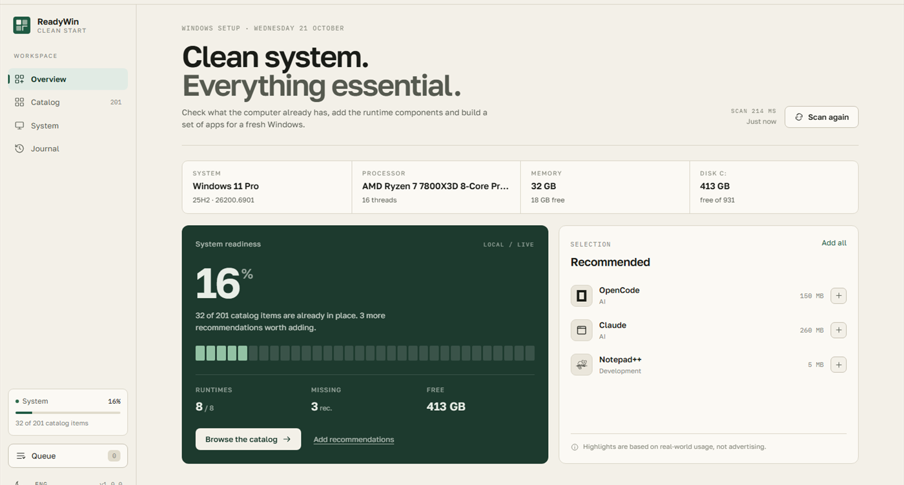
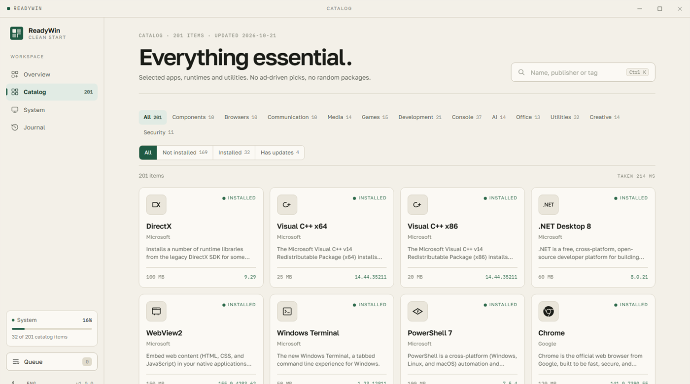
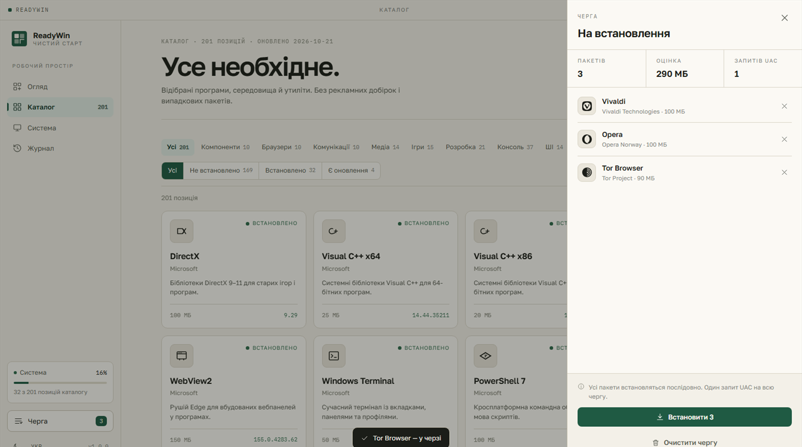
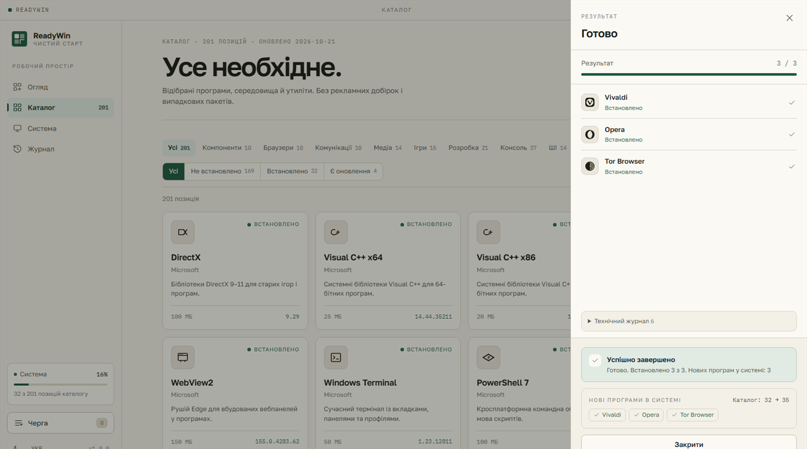

ЧИСТИЙ СТАРТ WINDOWS
Нова система — за одну чергу.
ReadyWin сканує комп'ютер, показує, що вже встановлено, і ставить решту чергою — з одним запитом UAC. Без рекламних добірок і випадкових пакетів.
- 201
- ПРОГРАМ
- 12
- ГРУП
- 5
- ПРЕСЕТІВ
- 4
- МОВИ

Уся система одним екраном: що вже на місці, чого бракує і що варто додати.
МОЖЛИВОСТІ
Що вміє ReadyWin
Шість речей, які роблять чистий старт Windows справді швидким: точно знати стан системи, не витрачати час на пошук встановлювачів і не давати згодою на UAC більше, ніж потрібно.
-
Сканування системи
Читає реєстр і пакети Microsoft Store (MSIX), щоб точно знати, що вже стоїть на комп'ютері.
-
Каталог з пошуком і фільтрами
201 позиція в 12 групах: фільтри за групою й станом, пошук за назвою, видавцем або тегом.
-
Компоненти середовища
DirectX, Visual C++, .NET Desktop, WebView2, Windows Terminal, PowerShell 7 і WSL — одним блоком.
-
Одна черга, один UAC
Усі вибрані програми ставляться послідовно за одним запитом прав адміністратора. Між пунктами чергу можна скасувати.
-
Відстеження оновлень
Порівнює встановлене з тим, що пропонує winget upgrade, і показує, де є новіша версія. Результат кешується на 90 секунд.
-
Чотири мови інтерфейсу
Українська, англійська, німецька й російська. Мова підхоплюється із системи при першому запуску.
КАТАЛОГ · 201 ПОЗИЦІЯ · 12 ГРУП
Все необхідне.
Відібрані програми, середовища й утиліти. Усе ставиться через winget — без рекламних добірок і випадкових пакетів.
ГРУПИ Й КІЛЬКІСТЬ ПОЗИЦІЙ
- Компоненти10
- Браузери10
- Комунікації10
- Медіа14
- Ігри15
- Розробка21
- Консоль37
- ШІ14
- Офіс13
- Утиліти32
- Творчість14
- Безпека11
ПРИКЛАДИ З КАТАЛОГУ
- OpenCode Desktop
- OpenCode CLI
- Claude Desktop
- Ollama
- LM Studio
- Google Chrome
- Mozilla Firefox
- 7-Zip
- VLC media player
- OBS Studio
- Steam
- Visual Studio Code
- Docker Desktop
- GIMP
- Bitwarden
Назви й описи програм у застосунку англійською — так вони приходять із каталогу. Інтерфейс навколо них перекладено.
ЯК ПРАЦЮЄ
Чотири кроки до чистої системи
Від першого запуску до готової системи — без ручного пошуку встановлювачів і без окремого вікна UAC на кожну програму.
-
01
Сканування
Читає реєстр і MSIX-пакети, показує, чого немає, і скільки місця вільно на диску.
-
02
Вибір із каталогу або пресетів
Окремі позиції, один із п'яти пресетів або рекомендації, які застосунок збирає сам.
-
03
Одна черга, один UAC
Пакети встановлюються послідовно; Windows питає права адміністратора рівно один раз.
-
04
Готово й диф «до/після»
Наприкінці видно, скільки позицій каталогу було на місці раніше і скільки додалося після черги.
ДРІБНИЦІ, ЯКІ ВАЖЛИВО ЗНАТИ
- Усе встановлюється через winget — жодних власних завантажувачів і «тихих» інсталяторів.
- Історія встановлень зберігається локально — журнали нікуди не відправляються.
- Чергу можна скасувати між пунктами; уже встановлене залишається на місці.
- Після черги застосунок показує, які програми реально з'явилися в системі.
СКРІНШОТИ
Три екрани застосунку
Огляд, каталог і черга — усе, що потрібно для чистого старту Windows.



МОВИ
Чотири мови інтерфейсу
Українська, англійська, німецька й російська. Перемикач живе в лівому нижньому куті застосунку й запам'ятовує вибір.
- УКР Українська Мова інтерфейсу за замовчуванням.
- ENG English Використовується, якщо системна мова поза списком.
- DEU Deutsch Німецькомовна система — німецький інтерфейс.
- РУС Русский Для російськомовних систем.
- При першому запуску мова береться із системної: uk, en, de або ru — за префіксом коду мови Windows.
- Якщо системна мова поза цим списком, інтерфейс буде англійською.
- Перекладено інтерфейс застосунку; описи програм залишаються англійськими з каталогу.